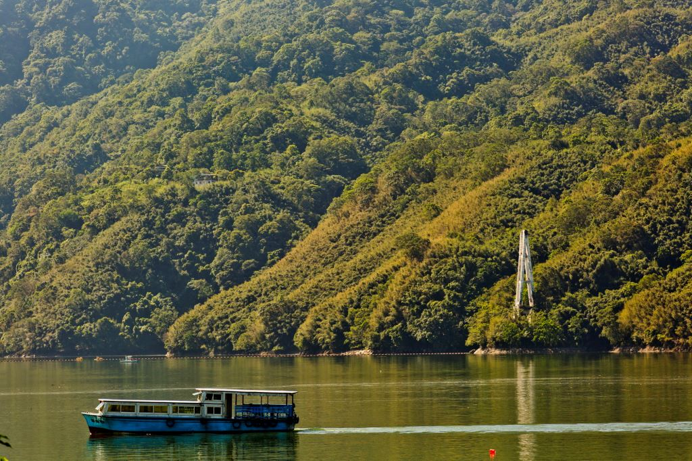
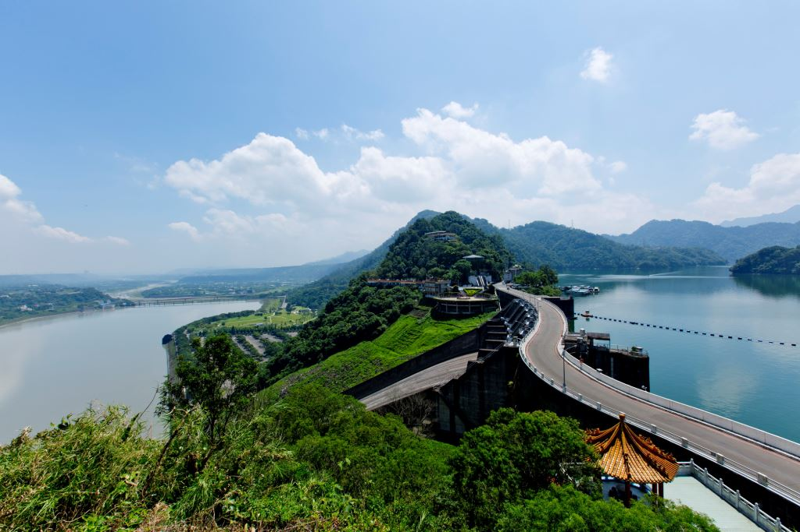
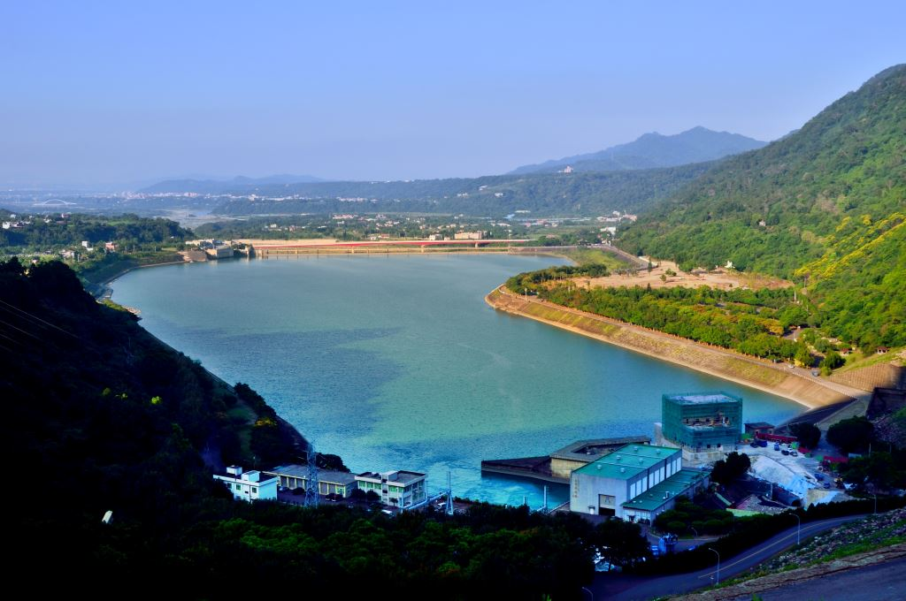

石門水庫是遠東最大的水庫，一年四季，湖光山色，風景迤邐。石門水庫對外可連接十幾個旅遊景點，園區內，大小公園綠樹成林，有腳踏車步道，也有環湖遊艇，提供旅客多元的休閒樂趣。
園區內受遊客青睞的遊覽景點包括大壩、溢洪道、梅園、高臺、遊湖碼頭、溪洲公園、槭林公園、茄苳林公園、欒樹林公園，五彩噴泉等等。
石門水庫也是賞花的好去處。冬季時節，放眼望去，楓葉一片金黃；梅花也不遑多讓，雪白花海，令人目不暇給。春天來臨之時，更有桃花、櫻花、杜鵑爭妍鬥豔，美得令人陶醉。每逢雨季，大壩洩洪時，場面壯觀，總吸引許多遊客前來遊賞。 秋季的石門水庫，是北台灣最佳的賞楓聖地，交通便利，楓樹數量多，加上石門水庫水氣充足，因此轉紅的色澤也更艷麗。園區內有超過3000棵樹齡30年以上的楓樹。秋冬時節，騎著自行車穿梭其中，或是漫步在楓林步道中，感受秋冬的浪漫韻味。
石門水庫還設有石門大壩碼頭及阿姆坪碼頭，旅客可搭乘遊艇環湖，在湖面上飽覽壯麗的水庫風光。每年五月，石秀灣的水上桐花更是全台獨有，而4月-8月期間，夢幻草原的綠草柔軟純淨，是石門水路的獨家祕境。